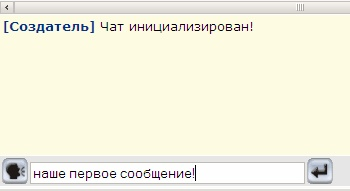
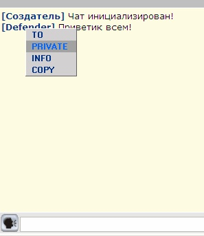
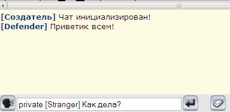
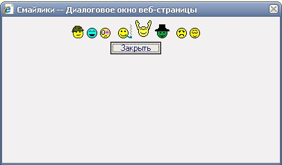
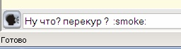
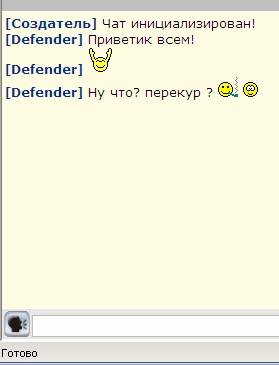

|
Курсы
Регистрация
Методика
Оглавление
Для учащихся

Статьи
Инструменты
Контакты
|
Урок
11. Создание
клубного чата
11.1.
Таблицы чата и игровых комнат.
Любая онлайновая игра не может обойтись без
средств общения игроков друг с другом. Выражаясь простым языком - наша с Вами
игра просто обязана иметь чат.
Для того чтоб сделать чат удобным для восприятия,
необходимо разделить общение между игровыми объектами. Таким образом, игроки
которые, к примеру, находятся в магической лавке будут общаться между собой и к
их общению не будут примешиваться сообщения из кузницы или арены.
Однако следует также предусмотреть возможность посылать
приватные сообщения игрокам в других комнатах.
Теперь перед нами встала задача наконец-то сделать
реальное разделение мира нашей с Вами онлайновой игры на игровые комнаты. Мы уже
создавали таблицу
Buildings для описания игровых локаций. Давайте же
добавим в нее все те объекты, которые мы успели создать до этого и намереваемся
создать впоследствии.
INSERT INTO
Buildings (ID, BuildingName, BuildingType, Town,PHP_File) VALUES(1,'Арена',1,1,'char.phtml');
INSERT INTO Buildings (ID, BuildingName, BuildingType, Town,PHP_File)
VALUES(2,'Центральная площадь',2,1,'map.phtml');
INSERT INTO Buildings (ID, BuildingName, BuildingType, Town,PHP_File)
VALUES(3,'Кузница',3,1,'smith.phtml');
INSERT INTO Buildings (ID, BuildingName, BuildingType, Town,PHP_File)
VALUES(4,'Комиссионный магазин',4,1,'comission.phtml');
INSERT INTO Buildings (ID, BuildingName, BuildingType, Town,PHP_File)
VALUES(5,'Магическая лавка',5,1,'magicshop.phtml');
INSERT INTO Buildings (ID, BuildingName, BuildingType, Town,PHP_File)
VALUES(6,'Центральная площадь 2',6,1,'map2.phtml');
INSERT INTO Buildings (ID, BuildingName, BuildingType, Town,PHP_File)
VALUES(7,'Вокзал',7,1,'station.phtml');
INSERT INTO Buildings (ID, BuildingName, BuildingType, Town,PHP_File)
VALUES(8,'Рынок',8,1,'market.phtml');
INSERT INTO Buildings (ID, BuildingName, BuildingType, Town,PHP_File)
VALUES(9,'Евромагазин',9,1,'euroshop.phtml');
INSERT INTO Buildings (ID, BuildingName, BuildingType, Town,PHP_File)
VALUES(10,'Банк',10,1,'bank.phtml'); |
Вы наверное заметили, что в таблице
Buildings появилось еще одно поле
PHP_File, в котором
содержится название того файла, который описывает данный игровой объект.
Теперь нам нужно продумать
структуру таблицы чата, чтоб он был достаточно простым и предусматривал
разделение общения на игровые зоны.
/*Таблица чата*/
CREATE TABLE `chat` (
`CH_ID` BIGINT unsigned NOT NULL auto_increment,
`CH_ROOM` INT unsigned NOT NULL, -- игровая комната
`USER_ID` bigint(20) unsigned NOT NULL, -- кто написал сообщение
`USER_ID_TO` bigint(20) unsigned default 0, -- кому сообщение 0 - всем
`IS_PRIVATE` SMALLINT DEFAULT 0, -- 1 - приватное (видно везде)
`CH_MSG` CHAR(255) NOT NULL DEFAULT '',
PRIMARY KEY (`CH_ID`)
) TYPE=MyISAM; |
Итак поле
CH_ROOM
- это наш игровой объект, который соответствует полю
ID
в таблице
Buildings.
USER_ID
- идентификатор игрока, который послал сообщение в чат
(соответствует одноименному полю из таблицы
users). Поле
USER_ID_TO
- идентификатор игрока, которому направляется сообщение, если оно адресовано
кому-то лично. Поле
IS_PRIVATE
является флагом, который определяет.
является ли сообщение приватным. Сообщение с таким флагом будет получено игроком
даже если он находится в разных комнатах с тем персонажем, который адресовал ему
сообщение. Поле
CH_MSG
- непосредственно текст сообщения.
Добавления и изменения в
SQL скрипте смотрите здесь.
11.2.
Нумерация комнат и общий чат.
Присвоив нумерацию всем игровым объектам мы можем теперь в
файлах, которые их описывают, производить идентификацию нахождения игрока
(изменяя поле Building в таблице users)
Например, как это будет выглядеть для кузницы, которая
имеет порядковый номер 3 в таблице
Buildings. Немного модифицируем файл smith.phtml.
$OBJECT_TYPE = 3;
// тип данного объекта 3 для всех городов
$query = "SELECT ID FROM Buildings where Town=$aUserTown
and BuildingType=$OBJECT_TYPE";
$result = mysql_query($query) or
die("Query failed : " .
mysql_error());
$aRow = mysql_fetch_array( $result);
$aObjectID = $aRow["ID"];
// меняем комнату у игрока
$query = "UPDATE Users SET Building=$aObjectID
WHERE Nick_Name='$aNickName'";
$result = mysql_query($query) or
die("Query failed : " .
mysql_error()); |
Для
того, чтоб при авторизации в игре сразу попадать в нужный игровой объект, в
котором был наш игрок перед последним выходом, нам нужно немного изменить файл
char.phtml. Этот файл является стартовым куда мы попадаем при
авторизации и по сути олицетворяет собой объект Арены, где происходят поединки.
В этом файле мы делаем следующее изменение:
...
$aBuildingID = $aRow["Building"];
...
// Проверим, где находится игрок
$query = "SELECT * FROM Buildings WHERE ID='$aBuildingID'";
$result = mysql_query($query) or
die("Query failed : " .
mysql_error());
$aRow = mysql_fetch_array( $result);
$PHP_File = $aRow["PHP_File"];
//какой скрипт отвечает за данную локацию?
if ($aBuildingID <> $OBJECT_TYPE){
print('<SCRIPT>location.href="'.$PHP_File.'?NickName='.$aNickName.'";</SCRIPT>');
} |
Вначале мы считываем положение игрока (значение поля
Building
из таблицы users)
и потом находим соответствующий этому объекту php
файл и производим переадресацию на него при помощи
JavaScript (location.href = ...)
Подобные изменения мы произвели во всех файлах, описывающих игровые
объекты (магическая лавка, комиссионный магазин и т.д. см. здесь.)
Теперь, когда положение персонажа в игровом мире четко
зафиксировано, мы можем приступить к созданию чата. Давайте воспользуемся ранее
созданным файлом buttons.phtml и добавим
возможность передавать строку, которую вводит пользователь в таблицу чата и
затем в окно чата.

Давайте напишем функцию на JavaScript, которая
будет передавать в файл chat.phtml строку
сообщения. (Ранее у нас был файл chat.html, теперь мы
должны поменять его на chat.phtml)
Кнопка со стрелочкой в файле buttons.phtml
теперь будет описываться так:
| <img src="img/b_ok.gif"
width="30" height="30" alt="Добавить текст в чат"
style="cursor: hand" onclick="AddToChat()"
/> |
Функция AddToChat
на
JavaScript теперь будет выглядеть таким образом:
function AddToChat()
{
cAdd = top.frames['bottom'].F1.text.value;
top.frames['chat'].location='chat.phtml?&msg='+cAdd+'&NickName=<?php
echo "$aNickName"; ?>';
RefreshChat();
top.frames['bottom'].F1.text.value = "";
top.frames['chat'].window.scrollBy(0, 65000);
} |
Давайте рассмотрим реализацию файла chat.phtml для записи
переданного сообщения в таблицу chat.
....
if (!empty($_GET['NickName'])){
$aNickName = $_GET['NickName'];
}
if (!empty($_GET['msg'])){
$aMsg = $_GET['msg'];
}
....
$query = "SELECT * FROM users WHERE Nick_Name='$aNickName'";
$result = mysql_query($query) or
die("Query failed : " .
mysql_error());
$aRow = mysql_fetch_array( $result);
$aUserFrom = $aRow["USER_ID"];
$aBuilding = $aRow["Building"]; // какая комната (строение)
?
if ($aMsg <> ''){
$query = "INSERT INTO chat (CH_MSG,USER_ID,CH_ROOM)
values('$aMsg','$aUserFrom','$aBuilding')";
$result = mysql_query($query) or
die("Query failed : " .
mysql_error());
}
// покажем последние 20 сообщений чата
$query = "SELECT u.Nick_Name, c.USER_ID_TO,
c.CH_MSG FROM chat c inner join users u on u.USER_ID = c.USER_ID where
CH_ROOM = '$aBuilding' or c.USER_ID_TO = '$aUserFrom' order by c.CH_ID
limit 20";
$result = mysql_query($query) or
die("Query failed : " .
mysql_error());
while ($aRow =
mysql_fetch_array($result)) {
$aUserName = $aRow["Nick_Name"];
$aMsg = $aRow["CH_MSG"];
$AllMessages .= '<a href=\"javascript:void(0)\"><SPAN>['.$aUserName.']</SPAN></a>
'.$aMsg.'<br>';
}
print( '<script>
document.getElementById("mes").innerHTML = "'.$AllMessages.'";
</script>' );
.... |
В
вышеприведенном коде мы узнаем комнату персонажа, который послал сообщение и
вместе с самими сообщением записываем в новую строку таблицы chat.
Затем мы отображаем последние 20 сообщений чата. Имя персонажа, добавившего
сообщение помещается в теги <SPAN></SPAN>,
что нужно для привязки контекстного меню, код которого приведен в файле:
ch2.js. Теперь мы можем кликать правой
кнопкой на нике персонажа и выбирать необходимое действие из меню.
В окне браузера это выглядит так:

11.3.
Скорость обновления
чата.
Так как таблица чата обновляется не только одним игроком, а
множеством других, мы должны сделать автоматическое обновление окна чата.
JavaScript функция
RefreshChat
для этих целей
реализована таким образом:
var ChatTimerID =
-1; // id таймера для чата
var ChatDelay = 15; // через сколько сек.
рефрешить чат
.....
function RefreshChat()
{
if (ChatTimerID>=0) { clearTimeout(ChatTimerID); }
ChatTimerID = setTimeout('RefreshChat()', ChatDelay*1000);
top.frames['chat'].location='chat.phtml?NickName=<?php
echo $aNickName ?>&show='+Math.random();
// заодно обновим комнату
top.frames['online'].navigate('room.phtml?NickName=<?php
echo $aNickName ?>&online='+Math.round(Math.random()*100000));
} |
Первый раз эта функция вызывается при загрузке страницы,
function strt(){
// Начинаем
ChatTimerID = setTimeout('RefreshChat()', 1000);
} |
а потом начинает
работать таймер с интервалом в 15 секунд (настраивается в переменной
ChatDelay)
Кроме вызова обновления окна чата, функция также вызывает
перерисовку окна показа игроков находящихся в комнате (room.phtml)
11.4.
Общение с персонажами в других комнатах
Для того чтоб обращаться к
персонажам, находящимся в других комнатах, существуют так называемые
приватные сообщения. Для передачи приватного сообщения перед ником игрока
ставится ключевое слово
private. Так, например, приватное обращение к персонажу
Stranger должно выглядеть так:

Если нужно обратиться к нескольким игрокам,
то строка будет выглядеть так:
private [имя1] private [имя2]
private [имя3] сообщение...
Давайте напишем код для проверки присутствия ключевого слова
private в файле chat.phtml.
....
if ($aMsg <> ''){
if( AnalyzePrivate( $aMsg,$aUserFrom,$aBuilding)
== 0 ){
$query = "INSERT INTO chat (CH_MSG,USER_ID,CH_ROOM)
values('$aMsg','$aUserFrom','$aBuilding')";
$result = mysql_query($query) or
die("Query failed : " .
mysql_error());
}
}
.... |
Функция
AnalyzePrivate
занимается анализом переданной строки чата и получает в качестве
аргументов собственно строку сообщения, ник пользователя и комнату чата.
Реализация функции выглядит так:
// Ищем всех приватных особ
function AnalyzePrivate( $Mess,$From,$Room
){
$retv = 0;
preg_match_all("/((private|to)\s\[\w+\])/",
$Mess, $out, PREG_PATTERN_ORDER);
$rep = sizeof($out[0]);
for($i=0;$i<$rep;$i++) {
$Nick = preg_replace("/(private\s\[|\])/","",$out[0][$i]);
$query = "select user_id from users where
Nick_Name='".$Nick."'";
$result = mysql_query($query) or die("Query
failed : " . mysql_error());
$aRow = mysql_fetch_array($result);
if( mysql_num_rows($result)
<> 0 ){
$retv = 1; // нашли конструкцию private [....]
$aUserIDTo = $aRow["user_id"];
$query = "INSERT INTO chat (CH_MSG,USER_ID,USER_ID_TO,CH_ROOM,IS_PRIVATE)
values('$Mess','$From','$aUserIDTo','$Room',1)";
$result = mysql_query($query) or
die("Query failed : " .
mysql_error());
}
}
return ($retv);
} |
Эта
функция использует регулярные выражения для определения перечня игроков, которым
отправляется приватное сообщение в результате выполнения функций
PHP (
preg_match_all
и
preg_replace)
в массив
$out у нас
сохраняются ники персонажей, которым нужно создать дополнительные строки
сообщений в таблице
chat. Таким образом эти
персонажи получат сообщение, даже если они находятся в других комнатах.
11.5.
Использование смайликов.
Для того, чтоб более ярко выразить какую-то эмоцию в
посылаемом в чат сообщении, обычно используются смайлики. Давайте добавим
несколько картинок смайликов:
которые будем использовать в нашем чате.
Давайте по нажатию на кнопку
вызывать окно
с отображением вышеперечисленных иконок. Код кнопки на
HTML в файле
buttons.phtml:
| <img src="img/b_smile.gif"
width="30" height="30" alt="Смайлики" style="cursor:hand" onclick="smiles()"
/> |
Функция
smiles
на JavaScript реализована вот таким образом:
function
smiles()
{
var x = event.screenX - 200;
var y = event.screenY - 250;
var sFeatures = 'dialogLeft:'+x+'px;dialogTop:'+y+'px;dialogHeight:210px;
dialogWidth:400px;help:no;status:no;unadorned:yes';
window.showModelessDialog("smiles.html", window, sFeatures);
} |
Таким образом мы
показываем файл smiles.html
в отдельном всплывающем
окне (немодальном диалоге) с
заранее заданными размерами и местоположением.
Давайте опишем картинки наших смайликов, которые мы
расположили в папке smiles_files,
в отдельном
ch2.91.js файле.
Вот как это выглядит:
// Разрешенные
смайлики
var sm = new Array("smile",18,18,
"laugh",15,15,
"fingal",22,15,
"smoke",20,20,
"hello",25,27,
"privet",27,29,
"grust",15,15,
"wink",15,15); |
Теперь этот файл мы
можем подключить в
smiles.html.
| <SCRIPT language=JavaScript
src="smiles_files/ch2.91.js"></SCRIPT> |
Массив
sm содержит последовательность из имен
смайликов и их размеров (height и
width). В файле smiles.html
эти картинки
выводятся динамически с помощью следующего кода:
<SCRIPT>
var i=0;
while(i<sm.length) {
var s = sm[i++];
document.write('<IMG SRC=smiles_files/'+s+'.gif WIDTH='+sm[i++]+' HEIGHT='+sm[i++]+'
BORDER=0 ALT="" onclick="S(\''+s+'\')"> ');
}
</SCRIPT> |
Функция
S,
активируемая по клику на соответствующую картинку смайлика
записывает название картинки в вызывающее окно в текстовую строку чата,
добавляя его к уже имеющейся строке:
<SCRIPT>
function S(name)
{
var sData = dialogArguments;
sData.F1.text.focus();
sData.F1.text.value = sData.F1.text.value + ':'+name+': ';
}
</SCRIPT> |
Всплывающее кно со
смайликами выглядит так:

Если мы нажмем на картинку с трубкой, то в строку чата
добавится его название, обрамленное двоеточиями:

Давайте теперь реализуем отображение этих смайликов в общем окне
чата. Для этого внесем небольшие изменения в файле chat.phtml.
Вначале добавим туда две строки:
$patterns
= array ("/\:hello\:/","/\:smoke\:/","/\:smile\:/","/\:privet\:/", "/\:laugh\:/","/\:wink\:/","/\:grust\:/","/\:fingal\:/");
$replace = array ("<img src=smiles_files/hello.gif>","<img
src=smiles_files/smoke.gif>","<img src=smiles_files/smile.gif>","<img
src=smiles_files/privet.gif>","<img src=smiles_files/laugh.gif>","<img
src=smiles_files/wink.gif>","<img src=smiles_files/grust.gif>","<img src=smiles_files/fingal.gif>"); |
Строка
$patterns
определяет буквенное
описание картинок смайликов, а строка $replace
содержит соответствующий первой строке
список описания картинок в формате HTML.
Теперь остается сделать так обработать строку чата:
$aMsg = $aRow["CH_MSG"];
$aMsg = preg_replace($patterns,$replace,$aMsg); |
и в окне чата мы
будем видеть сами картинки смайликов вместо текстового описания:

Смотрите измененный файл chat.phtml
здесь. Файл smiles.html
Вы можете взять тут.
Или просто скопируйте все файлы из папки
11_5 в папку www для тестирования.
В следующем уроке мы создадим здание вокзала и расписание карет, научимся
покупать и сдавать билеты, перемещаться в другой город.
|
|